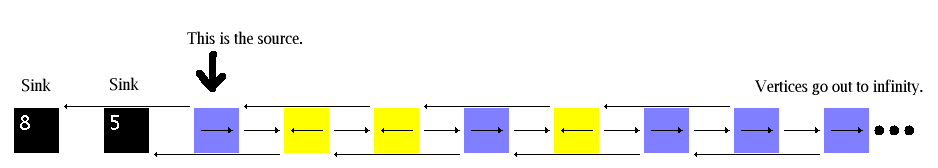

This infinite graph has a vertex for each nonnegative integer, and for each vertex n=2,3,4,5,... there is a (directed) edge from n to n+1 and from n to n-2. Vertices 0 and 1 are sinks; vertex 2 is the source. The ratio of the two sink counts approaches the golden ratio. Models of this kind have been studied by Holroyd and Propp.
